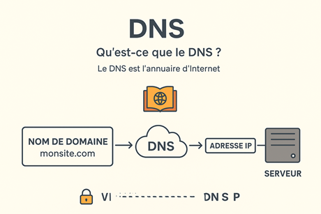

Chapitre III : DNS (Domain Name System)
🌍 1. Qu’est-ce que le DNS ?
- Le DNS est comme l’annuaire d’Internet
- Il traduit un nom de domaine (ex. monsite.com) en adresse IP (ex. 192.168.1.1)
👉 Sans DNS, tu serais obligé de taper l’IP du serveur pour accéder à un site
📖 2. Analogie simple
- Nom de domaine = le nom d’une personne (ex. "Eluan")
- Adresse IP = son numéro de téléphone
👉 Le DNS est l’annuaire téléphonique : tu cherches le nom, il te donne le numéro
🔑 3. Les principaux enregistrements que possède un DNS
- 🌍 1. A (Address Record)
- Associe un nom de domaine à une adresse IP (exemple :
monsite.com → 192.168.1.10)
- Lie un nom de domaine à une adresse IPv4
- Sert à pointer ton site vers le bon serveur
- 🌐 2. AAAA (IPv6 Address Record)
- Même rôle que le A, mais pour une adresse IPv6
- IPv6 (Internet Protocol version 6) est la nouvelle version du protocole
- Pourquoi IPv6 ? Parce qu’on manque d’adresses IPv4 😅
- 🔗 3. CNAME (Canonical Name)
- Fait un alias vers un autre nom de domaine
- Exemple :
www.monsite.com → monsite.com
blog.monsite.com → monsite.medium.com
- ⚠️ Ne peut pas coexister avec un enregistrement A sur le même nom
- 📧 4. MX (Mail Exchange)
- Indique les serveurs qui gèrent les emails de ton domaine
- Permet à un autre serveur de savoir où livrer les mails (voir détail ci-après)
- 🔍 5. TXT (Text Record)
- Contient des informations textuelles : vérifications, signatures, politiques de sécurité, etc.
- Exemples d’usage :
- SPF : autorise certains serveurs à envoyer des emails pour ton domaine
- DKIM : clé publique pour signer les mails sortants
- DMARC : politique anti-usurpation (email spoofing)
- 🔄 6. NS (Name Server)
- Indique quels serveurs DNS font autorité pour ton domaine
- ⏱️ 7. SOA (Start of Authority)
Donne des infos administratives sur la zone DNS :
- le serveur principal
- la personne à contacter
- la fréquence de mise à jour (TTL, refresh, etc.)
- 🧭 8. SRV (Service Record)
- Spécifie l’adresse et le port d’un service réseau spécifique
🔒 4. Importance du DNS
- Sans DNS bien configuré → ton site peut être inaccessible
- Mauvaise configuration des DNS email → tes mails peuvent finir en spam
- DNS rapide et sécurisé → améliore la performance et la fiabilité.
📡 Exemple concret
- Tu tapes www.google.com dans ton navigateur
- Le DNS traduit ça en une adresse IP de serveur Google
- Le navigateur se connecte alors à ce serveur

Email & DNS associés
1. Le lien entre nom de domaine et emails
- Quand tu achètes un domaine (ex. monentreprise.fr), tu peux :
- héberger un site web → via un serveur web relié au DNS
- créer des adresses email → ex. contact@monentreprise.fr
- Pour que les emails fonctionnent, ton domaine doit être configuré correctement dans le DNS
2. Les enregistrements DNS essentiels pour l’email
📌 SPF (Sender Policy Framework)
- Liste les serveurs autorisés à envoyer des emails pour ton domaine
- Objectif → éviter que des pirates envoient des spams en se faisant passer pour toi
- Exemple :
monentreprise.fr TXT "v=spf1 include:_spf.google.com ~all"
📌 DMARC (Domain-based Message Authentication, Reporting and
Conformance)
- Donne des règles de sécurité sur ce qu’il faut faire si un mail échoue aux tests SPF/DKIM
- Exemples de règles :
- none → juste rapporter
- quarantine → mettre en spam
- reject → rejeter directement
3. Analogie simple
- MX → comme l’adresse de ta boîte aux lettres 🏠 (où le facteur doit livrer)
- SPF → la liste des livreurs autorisés à déposer du courrier 📋
- DKIM → le tampon officiel qui prouve que le courrier est authentique 🔏
- DMARC → la consigne donnée au gardien si un courrier douteux arrive 🚫

Retour au sommaire